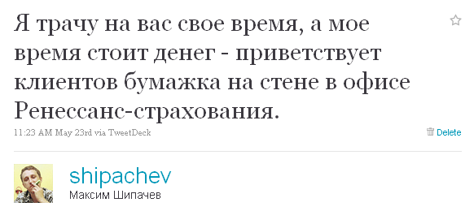
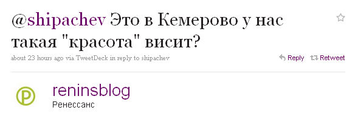
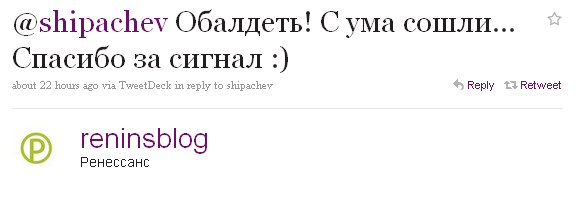

К твиттеру я присматривался долго. Будучи зарегистрированным уже несколько лет, писать в него считал глупым. Причин тому было две: психологическая — мне казалось, что незачем посвящать неограниченную общественность в свою личную жизнь (ну а вдруг кому-то всё-таки интересно?); железная — твиттер с компьютера это, в общем-то глупость, твиттер должен быть мобильным, а мой бывший телефон «за тыщу» новых технологий не поддерживал.
Потом я купил LG Optimus One, и практически одновременно созрел психологически. Стал писать, реплаить и ретвитить. Понял достоинства, разобрался с недостатками.
Сегодня хотел бы остановиться на использовании твиттера в качестве формы обратной связи в бизнес-среде. Недолгий опыт подсказывает, что в настоящее время упоминания в твитах компаний федерального уровня остаются без внимания очень редко. PR-службы компаний в реальном времени мониторят упоминания названий компаний в микроблогах, и практически всегда twitter — наиболее короткий и простой способ указать компаниям на их недочёты.
Поводом для написания поста, стало вчерашнее моё посещение офиса «Ренессанс-страхования» в Кемерово. Компания занимается прямыми продажами страховых услуг и заключением договоров пенсионного накопления. Лист А4 с напечатанной фразой «Я трачу на вас свое время, а мое время стоит денег» в этой связи показался мне неуместным. Неуместность была высказана мною в твиттере.

Через несколько минут меня зафоловил аккаунт головного офиса Ренессанс-Страхования, и ответил

Я ответил, что да. Официальный аккаунт поблагодарил за «сигнал»

О другом примере я уже писал в посте про SMS-рассылку Техносилы. Тогда в официальном аккаунте, в ответ на мой твит, сообщили, что отписаться от SMS-рассылки можно просто отправив сообщение на @ru_Tehnosila.
Да и твит с анонсом поста про пэйнтбол с Tele2 тоже был сразу отретвичен @tele2russia.
Кемеровские компании до подобных коммуникаций еще не созрели. Даже у большинства кемеровских телекоммуникационных компаний нет в твиттере ни официальных ни неофициальных представителей. Исключением похоже являются только твиттеры Алексея Калины @i_kalina из БиЛайна и Остапа Григорьянца @ostap_megafon из Мегафона.
Может у вас есть примеры?